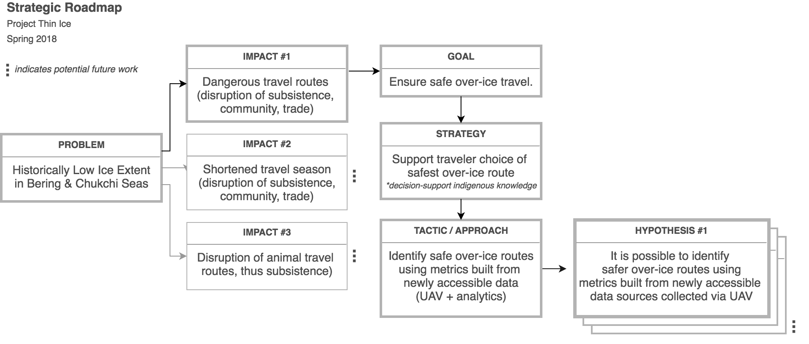
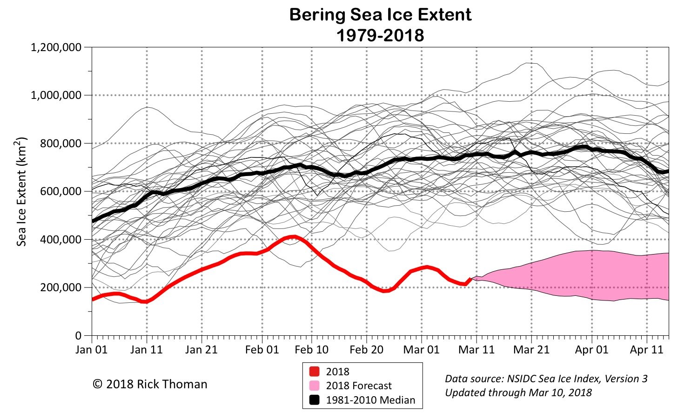
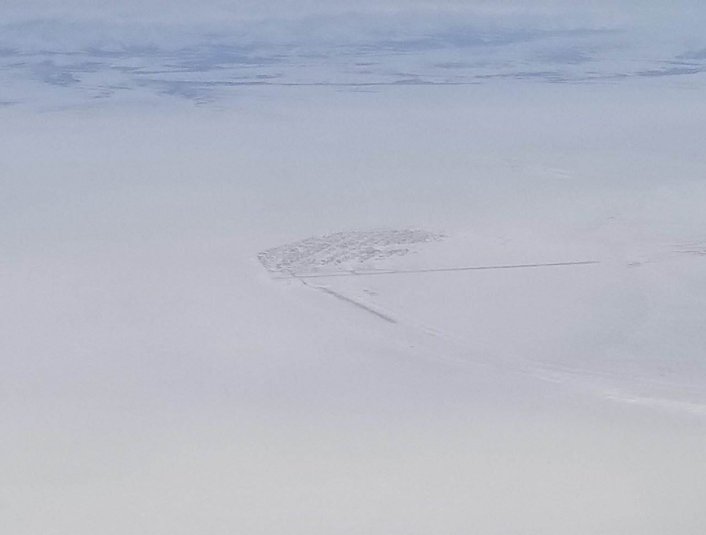
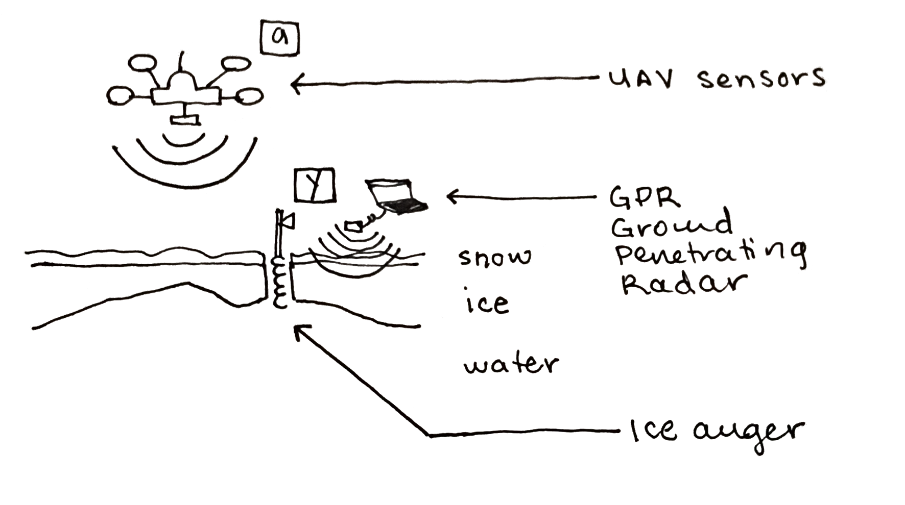
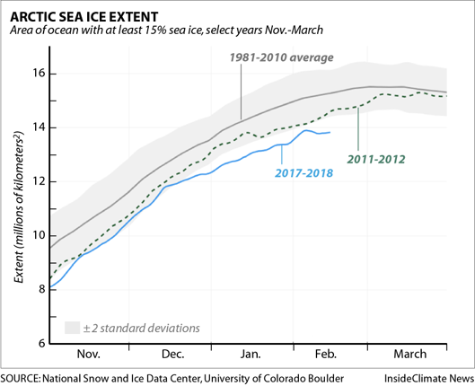

Collaboration between K2 Dronotics and Luminant Data, April 2018
Original Pilot Proposal, March 2018
2018 has brought a year of unprecedented low sea ice extent in the Arctic, along with thinner ice. Thin ice can cause ice roads to be dangerous or even unusable. A team of two Alaskan-run companies specializing in UAV surveying and statistical modeling propose a low-cost scientific investigation capturing multi-sensor data that correlates with ice safety in the Chukchi Sea in April 2018. Our goal is to map meaningful metrics of ice safety with survey data acquired via UAV-mounted sensors, supplementing indigenous knowledge to aid the safe navigation of ice roads.

Throughout long winters, ice is utilized as transportation infrastructure for people, goods, and animals in Arctic Alaska. Decreases in thickness and extent of ice across the Arctic cause significant constraint of local travel routes, subsistence living, and community connections. As 2018 ice extent in the Bering Sea and Chukchi Sea reach es all-time lows, the toll is more significant than ever -- isolating communities, disrupting supply routes, failure of structures, and even causing deaths. Whether ice is safe to traverse on foot or vehicle is determined by thickness among other factors [1] . Thickness is critical to know, yet arduous to measure.
Arctic sea ice reached its annual maximum extent on March 17, according to the National Snow and Ice Data Center, with cover at 5.59 million square miles. It's the second-lowest cover on record and just 23,000 square miles more extensive than the record low, which happened last year. The four lowest maximum extents on record have happened recently, in 2015, 2016, 2017 and now, 2018.
Local residents across the Arctic have been dealing with hazardous traveling conditions for weeks now. Some have had to cut short trips to camp for fear the early overflow would make it too dangerous to wait. Others have postponed traveling altogether, not wanting to risk getting stranded by the warm conditions.
- Outlook shows no break in the heat , The Arctic Sounder, March 30, 2018

Overall ice extent is extremely low, approximately ½ to ⅓ of km^2 of prior year coverage
https://twitter.com/alaskawx/status/972901359279267841
Quality and Availability of Information
Alaskan communities typically use word of mouth and communication technologies to disseminate information about the conditions and safety of travel routes. In Kotzebue, KOTZ radio is a critical communication channel for weather and climate conditions that impact when and where people decide to travel. Weather information is sourced from government weather stations, forecasting, and local anecdote. Reporting includes typical weather measures (temperature, wind, precipitation, barometric pressure, etc), but does not present quantitative local reports on the safety of travel routes. Information about ice safety, if available, originates from anecdotes or occasional physical measurements.
Climate change, data, visibility
While scientists quantitatively observe significant changes in ice extent, governmental funding for science and meteorology is declining. For many years, coastal Alaska has suffered the consequences of global climate change, particularly in the form of increased storms, precipitation changes, permafrost melt, water current changes, erosion, and animal habitat elimination. At minimum, this impacts 7.8% of Alaskans (57,664 people) who live on the Bering or Chukchi Seas. Having the longest coastline of any state in the US, Alaska is particularly connected to the ocean and its changes, but is far less visible due to remoteness. In the last year, critical deployments of weather telemetry supporting weather predictions
have been suspended in many parts of Alaska
. With less of this data, climate conditions along the Alaskan coastline become less visible to scientists and the public.
Better ice monitoring with inexpensive higher quality data
In recent years, scientists monitoring climate change and arctic ice have utilized sensor systems and data processes that are expensive, offline, decentralized, and intermittent. This research is not specifically focused on supporting community safety, and thus has also not focused on the localized scale. This project team specializes in technology that improves upon legacy approaches in terms of efficiency, fidelity, quality, and cost (93.7% cheaper). These technologies present a new opportunity to utilize high quality data to predict the safety of local travel routes from as-needed surveying, open source data modeling, and accessible hardware.
Technology in Arctic Alaska
We imagine a future where communities will be able to map safe travel routes automatically and as needed, from data collected with publicly-owned hardware, leveraging access to internet-based maps and predictive technologies. As broadband reaches even the most remote Alaskan Arctic coastline , connectivity has exposed the opportunity to provide high quality, on-demand weather information and specialized tools over the internet. Our opportunity is to extend this even further with new technologies, building hyper-localized predictive measures of weather.

Aerial view of Kotzebue, March 2018
Photo by Pong Decrito of Anchorage
In order to enable safe navigation of changing ice-based travel routes, we propose an investigation of ice safety at the local scale. Using UAV (unmanned aerial vehicle) hardware, sensor technologies, spatial data modeling software, and data analysis methodologies, the team will map and collect data of ice roads originating in Kotzebue, Alaska with a variety of sensors. Using direct and indirect observation, the team’s goal is to determine if non-contact methods can produce data that will effectively map areas of unsafe ice.
This team will collect data along travel routes surrounding Kotzebue, Alaska over 3 days, process resulting spatial data, and finally publish and present findings to stakeholders and the public.
Approaches to validating the Hypothesis
Data Strategy : Correlate ice thickness measurements (physically collected “target” data) with inexpensive UAV survey measurements (no-contact “predictor” data) to determine whether ice safety can be established inexpensively by portable aerial vehicles.
Strategy : Using multiple different sensor systems, we will investigate the correlation of UAV sensor data with samples of ice thickness. This will result in a learned relationship between the predictor and target variables. This in turn determines acceptance of the hypothesis.
|
 |
where the learning problem is defined as: y = P(a)
y is the direct measurement of ice thickness a is the predictor variable from UAV based-sensors P is the learned relationship between y and a |
1. [Requirement]
Target Variable: Deterministic measure of ice thickness
Strategy : Take samples benchmarking/calibrating thickness (base of correlation)
2. [Requirement]
Predictor Variables : Data likely to correlate with target data
Strategy : Collect data from sensors that correlates with thickness of ice, such as presence of overflow, water, cracks, heat, density of snow or ice
3. [Methodology]
Statistical Analysis, aka “Data Science”
Strategy: Correlate target and predictor variables to determine relationship
4. [Methodology]
Visualize trends
Strategy : Geospatially map collected data, correlations, and photography
Electronic technologies are known to decrease in cost as production costs decrease, scale increases, standards emerge, and platforms become commoditized. For this particular project, the change in surveying cost from only 8 years ago is extreme. UAV surveying has never been more financially accessible and convenient. These costs are expected to decrease even further as a result of software development specifically supporting UAV surveying data analysis.
In short, UAVs and open source software generally provide a 93.7% reduction in cost of surveying technology. This difference is even greater in Arctic Alaska, where fuel and aircraft costs are always higher than average.
|
New Technologies |
Traditional Technologies |
Advantages of New Technology |
Cost Change |
|
“UAV” Unmanned Aerial Vehicle Owned |
Helicopter, Plane Rental |
Inexpensive (comparatively)
Closer to ground (~10 ft)
No risk of human harm |
$1k/hr [2] → cost of UAV ($500-$5,000) |
|
GPR Sensors (2018) |
GPR Sensors (2010) |
Cheaper (Moore’s Law) Lighter Faster |
|
|
Open source statistical software |
Proprietary statistical software |
Open source Widely used and tested Transparent source code |
$2k [5] → $0 |
|
Open source geospatial software |
Proprietary geospatial software |
Open source Widely used and tested Transparent source code |
$2,500 [6] → $0 |
|
Cloud data storage (2018) |
Cloud data storage (2010) |
Cheaper Diversified and new products |
(Amazon S3) $0.110/GB/mo [7] → $0.023/GB/mo |
|
Cloud hosting & compute (2018) |
Cloud hosting & compute (2010) |
Cheaper Diversified and new products |
(EC2 m2.4xlarge) $2.00/hr [8] → $0.24/hr |
|
|
|||
|
Estimate A: Traditional Technologies Estimate B: Assume rental of GPR unit in 2010 |
A $38,551 B $14,551 |
||
|
Estimate: New Technologies |
$910 |
||
|
Cost difference (not inclusive of human labor) Example: 4-hour land survey, 20 hours compute, 100 GB data
|
2.4 - 6.3% of 2010 costs
93.7% cost reduction |
||
Beyond a validation of the hypothesis, the following will result from the project:
Kotzebue airspace, March 2018
March / April 2018
|
Phase |
Dates |
Outcome |
|
1a. Calibration and Data Testing |
2 days |
Calibrate new sensor system. Survey ice near Anchorage, river and ocean. De-risks issues in onsite. (UAV) |
|
1b. Site pre-identification |
5 days |
Identify potential sites for surveying with indigenous residents and climatologists based on travel routes and safety concerns. (Journalism) Some locations contingent on FAA approval. (UAV) |
|
2. (Onsite) Surveying and Interviews |
3 days April 14-17 |
Onsite conversations with locals, hand-mapping routes (Journalism) Survey identified sites (UAV) |
|
3. Data Processing |
2 weeks |
Process and produce maps of collected data (Data processing) Statistical processing, correlation, metric-based validation (Data Science) |
|
4. Journalism |
3+ weeks |
Write narrative and conclusions for a) lay audience and b) scientific/tech development report (Journalism) |
|
5. Presentation |
4/18+ |
Publish, present findings |
Luminant Data is an Artificial Intelligence Consultancy specializing in rapid feasibility testing and tech adoption life cycles for custom-built machine learning products. Founder: Clare Corthell clare@luminantdata.com
K2 Dronotics is an Alaskan drone UAV service company specializing in engineering inspections, custom payloads, fleet pilot training, GIS, and analysis. Founders: Ben Kellie, Nick Kellie nick@k2dronotics.com
This project is uniquely accessible to the teams given their expertise in new low-cost, non-proprietary technologies, Luminant Data in statistical modeling, K2 Dronotics in UAV Surveying. The team can deliver the project at approximately 15-20x less expense than other groups, consultants, and technologies.
Minimum budget (travel + materials): $3,000
Target budget (travel, materials, nominal hours): $10,000
If the team validates the hypothesis that it is possible to estimate ice safety with survey data acquired via UAV-mounted sensors, we would look to utilize this data in the most impactful way possible: warn travelers of specific areas of dangerous ice and provide alternative routes in a timely and consumable manner.
Scientists and communities confirm the trend of a year over year decrease in ice extent, which places a greater reliance on routine surveying and mapping of safe transit routes for communities across the Arctic, not just in Alaska. We can close that gap at a low cost and provide communities with tools to safely rely on critical natural infrastructure such as ice roads.
 [9]
Source: MN DNR
|
Climate Change Public Safety and Infrastructure Scientific Data Collection Technology for Alaska |
an alaskan tech collaboration
|
[1] Eicken, Hajo & Mahoney, Andrew. (2015) Sea Ice: Hazards, Risks, and Implications for Disasters. 381-401.
[4] See PiCoR $400 https://www.xethru.com/blog/posts/picor-ice
[5] Example: Mathematica $1890 https://www.wolfram.com/mathematica/pricing/industry-individuals.php
[6] Industry Standard: ESRII Arc-gis http://www.cloudpointgeo.com/blog/blog/2014/5/9/a-summary-of-arcgis-platform-and-products
[9] Source: InsideClimate News 2/17/18 https://insideclimatenews.org/news/17022018/arctic-sea-ice-record-low-extent-alaska-bering-hunting-whales